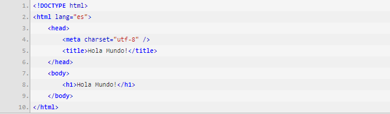

Crear una estrategia de Objetos Virtuales de Aprendizaje (OBA) u Objetos Virtuales de Informacion (OVI) para dinamizar el aprendizaje virtual durante esta pandemia.
HTML5 es la versión 5 del lenguaje de marcado HTML. Un documento escrito en HTML tiene una estructura básica como la siguiente:

Un poco de historiaComo bien indica su propio nombre es la 5 versión del estándar de WWW (World Wide Web), el W3C a estado años trabajando en este nuevo estándar despuesdespués del XHTML, el cual se puede denominar como uno de sus fracasos, al tener un lenguaje muy estricto, y no ser compatible con la mayoría de las webs publicadas en el momento del lanzamiento, esta nueva versión sí es compatible con todas las anteriores, ademas de incorporar nuevas mejoras, algunas de las novedades que mas ruido han hecho ha sido la desaparición del case sensitive, con lo que podemos escribir por ejemplo la etiqueta ID de un div en mayúsculas o minúsculas y que los navegadores lo reconozcan sin producir error, aun así se recomienda seguir unos estándares, como son el de escribir todos los elementos en minúsculas, y sus valores entre comillas dobles “”, aunque en esta versión sean validas las comillas simples ”; también se recomienda cerrar todas las etiquetas, aunque no sea obligatorio como en XHTML; así mismo también incluye nuevas funciones como la reproducción de vídeo y sonido, y algunas etiquetas nuevas, para ello hicieron un estudio sobre el nombrado de etiquetas de las webs mas famosas, y casi todas tenían una barra lateral, llamada aside, un encabezado llamado header, y un pie llamado footer, así como las barras de navegación nav; y un largo etc. |
|